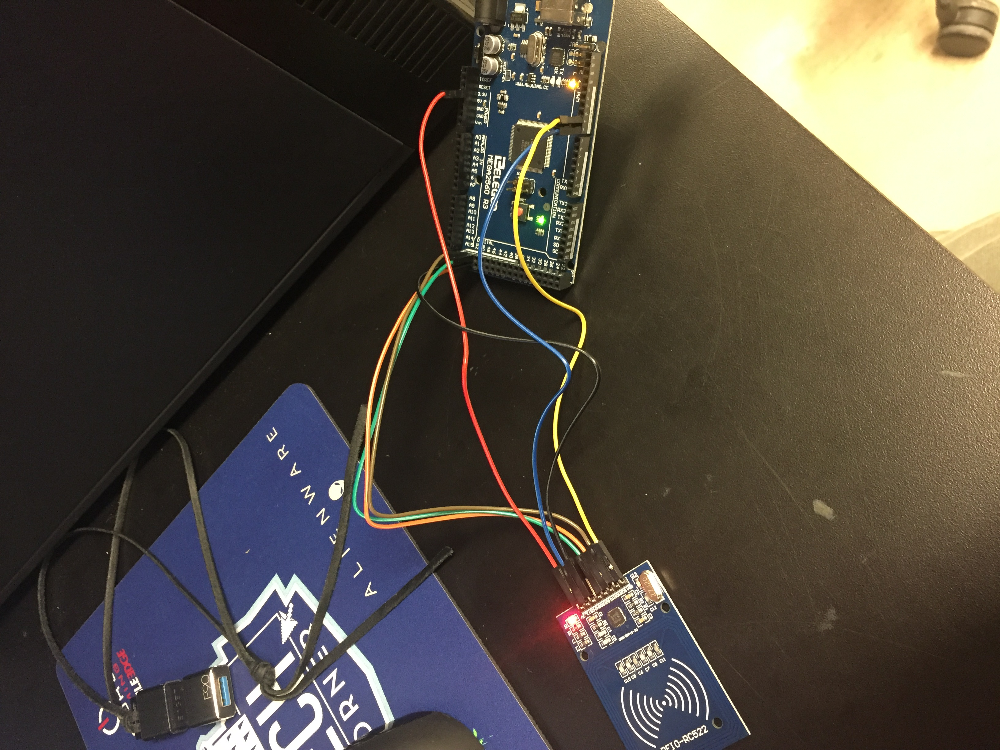

The Arduino Mega 2560 is going to be the main component for controlling power distribution of the charging dock. Though it's not likely that it will transfer the power throughout the system directly, it will control the system of switches and meters that does.
This component is also being used for the locking mechanism that will hold a device in place while its owner/user is gone by controlling an RFID scanner.
RFID

RFID being tested with Arduino Mega
The current design of the locking mechanism involves using an RFID scanner. The way this will be implemented is by utilizing the RFID chips that come built into the student ID's provided/obtained by GSU students. These id's are unique to each of the cards.
To use the charging station, the student can hold their ID up to the scanner, prompting RFID scanner to obtain their card's number. The microcontroller holds the card's number and waits until the same card is scanned again before releasing the locking mechanism. After the student returns and collects their scooter, the microcontroller deletes the string used to store the number and awaits the next one to be used.